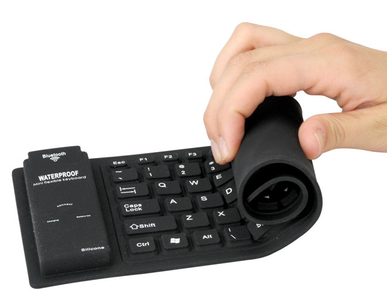

Клавиатуры бывают разные, причем отличаются не только по функциональности, но и в конструктивном плане. Гибкая клавиатура изготовлена из силиконовой резины, удобна тем, что она бесшумна, ее можно свернуть в трубочку, не боится ударов, падений, пыли, воздействий жидкости, часто имеет встроенную подсветку.
«Гибкие» клавиатуры с точки зрения технологии
Как правило, клавиатуры имеют жесткий корпус. При наличии рабочего стола, с которого клавиатуру не нужно убирать, это не критично, однако во всех остальных случаях может мешать. Стандартная клавиатура имеет достаточно большие размеры, уменьшить ее можно лишь уменьшая число кнопок, либо урезая их в размере — ни первое, ни второе не добавляет удобства в работе. Так что приходится выбирать — удобное хранение и транспортировка или удобное использование. Кроме того, жесткий пластмассовый корпус достаточно хрупок, так что при наличии ударных нагрузок просто-напросто ломается. Исправить это можно лишь использованием металлических сплавов, однако последнее сильно бьет по цене, да и по удобству использования нередко тоже. Кнопки физически отделены от корпуса — в щели может забиваться пыль, попадать жидкости (в т.ч. и агрессивные). В большинстве случаев вышеперечисленное не так уж и мешает жизни, что и привело к массовости «стандартных» клавиатур, однако бывают ситуации, когда они просто неудобны. При отсутствии альтернативы с этим пришлось бы мириться, однако альтернатива есть: Гибкая Клавиатура!
Итак, как мы можем избавиться от указанных выше недостатков? Очевидный вывод — клавиатура должна быть мягкой, дабы для транспортировки или хранения ее можно было свернуть/сложить и сэкономить место, и герметичной, дабы никакая гадость не могла попасть внутрь и повредить тонкую механику и электронику. Сегодняшний уровень технологий вполне способен это обеспечить, но, естественно, путем отказа от привычных материалов изготовления корпуса клавиатуры и кнопок и стандартных механизмов возврата клавиш. Собственно, это мы и наблюдаем в изучаемой сегодня клавиатуре. Основание — достаточно тонкое из двух листов резиноподобного полимера, в котором и скрывается матрица клавиш.
Достоинства…
Основными преимуществами являются те, ради которых новая технология производства и создавалась. Во-первых, это гибкость. Когда клавиатура лежит на рабочем столе, она полностью соответствует по длине и ширине аналогичным «жестким» моделям, однако при необходимости может быть свернута в трубочку. Необходимость таковая легко может возникнуть при транспортировке клавиатуры, либо для хранения в тех случаях, когда она используется эпизодически (т.е. развернул — поработал, свернул — засунул в какой-нибудь укромный угол). Наиболее заметно это достоинство в случае портативных компьютеров.
Вторым достоинством является хорошая защищенность от внешних воздействий: «обычные» клавиатуры имеют не герметичную конструкцию, «гибкие» герметичны. Соответственно, имеем как минимум полную защиту от пыли, чего нередко уже достаточно. Переверните клавиатуру и потрясите — получите на рабочем столе кучку мусора. Даже в случае домашнего использования или в офисе — в более тяжелых случаях (например, на производстве) запыленность воздуха может оказаться такой, что клавиатура будет не только заполняться мусором, но и просто откажется через некоторое время работать. «Гибкой» модели это никак не грозит — сколь бы ни были неблагоприятны условия, максимум, что потребуется изредка делать, это протирать устройство влажной тряпочкой.
Разнообразные жидкости также могут оказаться причиной ранней смерти «классической» клавиатуры. Если со стандартной офисной бедой, типа пролитой чашки кофе, некоторые производители давно уже научились бороться, то большие количества жидкости им не по плечу. Даже если это водопроводная вода, не говоря уже о более агрессивных средах. Причем ладно еще, если речь просто о жидкости — бывают и такие вещи, как варенье (дома) или аналогичные вязкие и клейкие вещества (на производстве или в лаборатории). «Спасти» от них обычную клавиатуру можно единственным способом — не подвергать риску соприкосновения. Для «гибкой» же клавиатуры это все не более страшно, чем пыль и прочие сухие вещества — внутрь клавиатуры ничего не попадет, так что электроника точно останется целой, механизм возврата клавиш тоже ничто не испортит, поскольку это герметичный «мешочек» с силиконом, единственная проблема — материал корпуса должен выдерживать контактирующее вещество. Но от многих распространенных бытовых растворителей, таких как вода или даже спирт (всякий; и растворы спиртовые тоже) по заявлению производителя клавиатура защищена полностью. Хоть в погружение с собой ее берите — работать можно будет и на дне моря (если задачу герметизации компьютера решите успешно).
Не забудем упомянуть о гибких клавиатурах с подсветкой
Для музыкантов есть своя гибкая клавиатура
…и недостатки
Итого
Бесспорно, рассматриваемая сегодня клавиатура не является идеальным устройством ввода для всех сфер применения. Сразу же можно сказать, где она будет не на своем месте — при очень активной работе в больших количествах лучше приобрести классику. Опять же — тем, кто привык к функциональности современных мультимедийных клавиатур, будет попросту недоставать имеющихся 109-и клавиш. Однако точно также сходу можно назвать и сферы применения, в которых подобные модели попросту безальтернативны: если важна тишина и полная пылевлагозащищенность, есть потребность в минимизации занимаемого в «неактивной форме» места (при транспортировке или просто для хранения), возможны несанкционированные механические воздействия путем бросания на пол и т.п. Словом, в тех условиях, на которые при создании гибких клавиатур производители и закладывались.